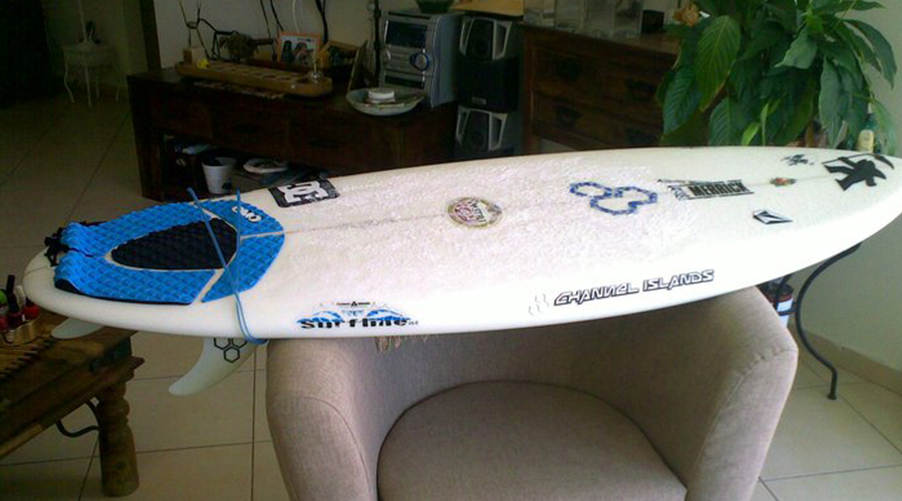
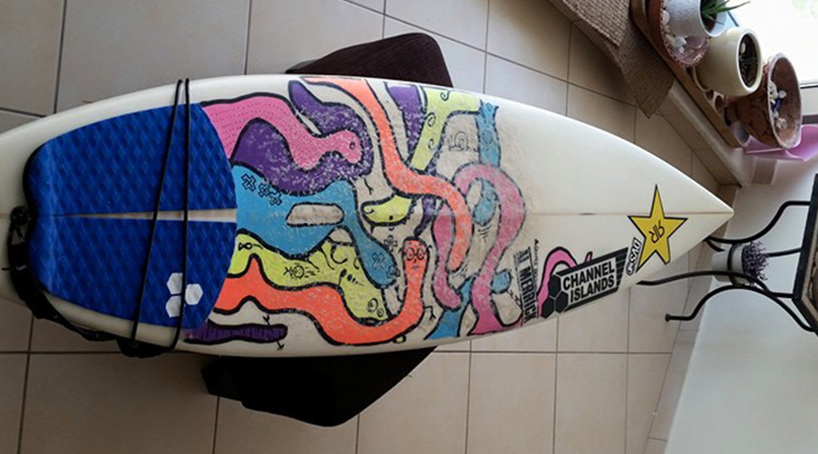
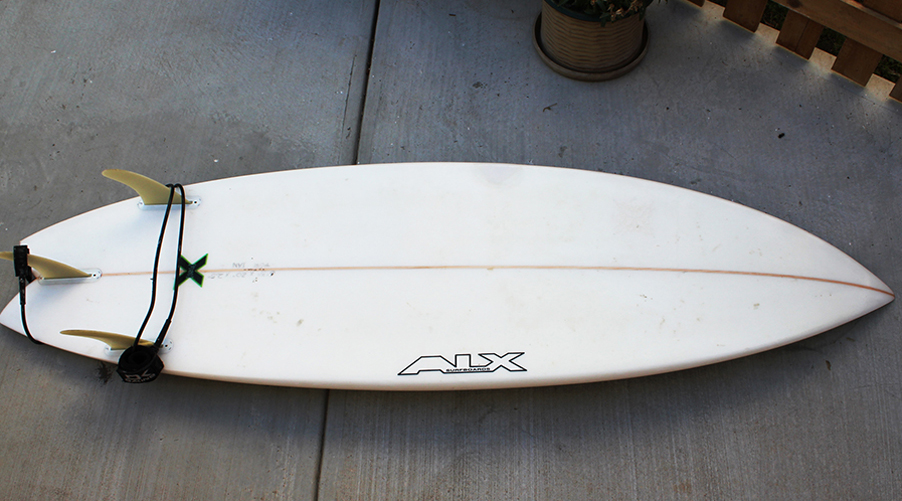

Add Surfboard
insert username
add surfboard in my position
5’4 28L al merrick biscuit

more info

more info

more info
This is the info section #0
This is the info section #1
This is the info section #2